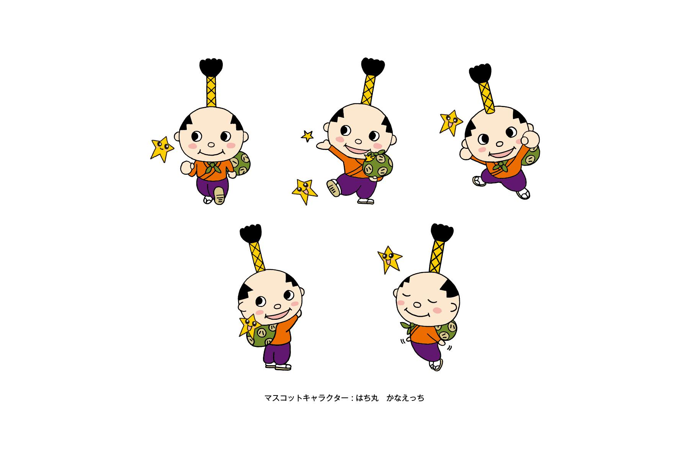

works｜tmc
本文の保存版（2026-11-22）
出典URL：https://www.tmc-creative.jp/works/nagoya-kaifu-400anniversary.html

名古屋開府400年祭
400th Anniversary Festival of the Founding of Nagoya
- branding・ci・vi / graphic design / character / anniversary
1610年、徳川家康の命によって始められた名古屋のまちづくり。その開府より400年となる2010年、行政や各種団体などが一体となって開催した「名古屋開府400年祭」。事業コンセプト「夢、つなごう。」とシンボルマークを開発。「nagoya」「400th」「2010」のキーワードを吹き出しにすることで、楽しく元気な印象を与えました。また、公募によって選ばれた複数の作者が作画したマスコットキャラクターのリデザインを手掛け、タッチの統一や動きのバリエーション展開、性格設定、さらに各種広報ツールを担当しました。
①② logo mark ③〜⑤ character ⑥⑦ poster ⑧ goods ⑨ wrap advertising
client. City of Nagoya
agency. DENTSU INC. Chubu Branch Office
地図で使用する画像
- はち丸の画像
https://www.tmc-creative.jp/works/images/400year_hachimaru.jpg - はち丸の画像（予備）
https://tre-navi.jp/toretate/wp-content/uploads/2015/03/unnamed-411x6401.jpg